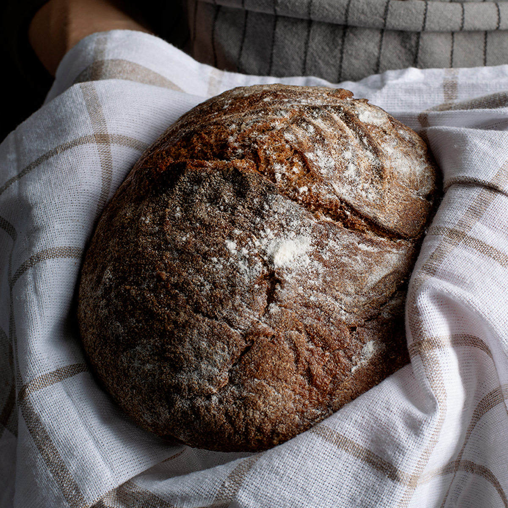
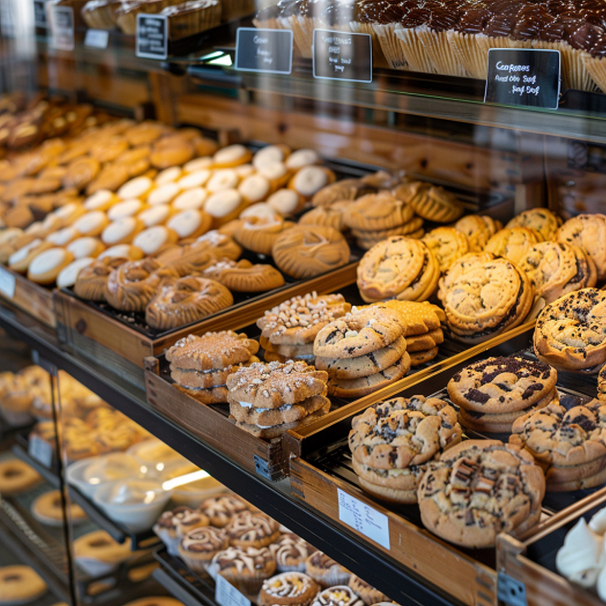

Breads
Slow-fermented sourdough, country loaves, and rolls with a crisp crust and soft center.
Sample range: $5–$12
Made fresh in small batches
Browse bakery favorites. The menu changes with the season, so contact us to check what's available today.
Tap “Save favorite” on a bake to keep it here for your next visit.
Slow-fermented sourdough, country loaves, and rolls with a crisp crust and soft center.
Sample range: $5–$12

A hearty country loaf, shaped by hand and baked for a deep golden crust.
Sample range: $9–$12

Choose from croissants, fruit danishes, muffins, and rotating seasonal pastries.
Sample range: $3–$6 each

Handmade cakes for birthdays and small gatherings. Please inquire a few days ahead.
Sample range: $28–$75
We take pre-orders for pickup. Online checkout is not available; send a request and our team will confirm the details.
Request a pre-order